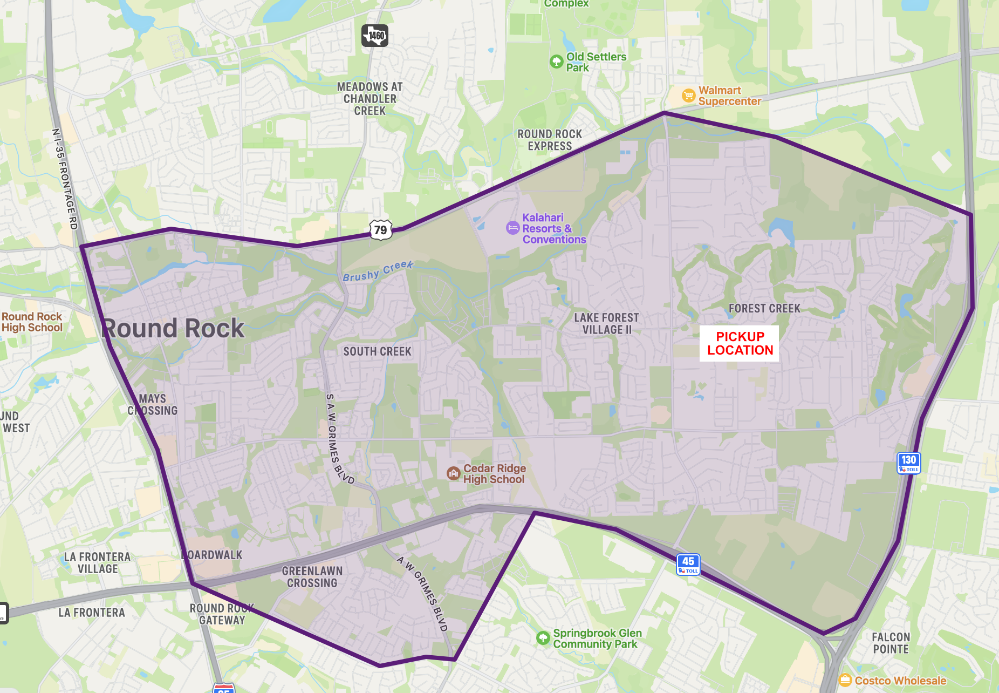

Mulch and Donation Drive - $5 per bag
High quality mulch in 2 cubic feet bags, available in three different colors at $5 per bag. A 2 cubic feet bag covers 12 square feet at 2-inch depth, perfect for use in vegetable gardens, flowerbeds and around trees. Options to deliver right to your front yard are available. Continue reading below.
March (date tbd) - Pickup or Delivery
On Saturday, March 29th, we'll be rolling out the mulch in March! Orders taken through Friday, March 21st. You can have it delivered to your home or business, or pick it up at Forest Creek Elementary and we'll load into your vehicle. Minimum order for delivery is $40 and this can be a combination of mulch and/or donation.
Our delivery area is roughly the Cedar Ridge Attendance Zone, which is approximately the area South of 79, East of 35, West of 130, and North of Pflugerville Pkwy/Schultz Ln/45 Toll.
You can purchase mulch, donate cash, or both
Don't need mulch because you aren't local? Choose "No Mulch, I'll be making a donation". If you need just a few bags and want it delivered, you can add a donation to meet the delivery minimum of $40.
Thank you for your support!
Whether you are a friend, family member, co-worker, or alumni of the program, the 200 member Cedar Ridge Raider Band and Color Guard cannot exist and compete at this level without your support. All proceeds go toward supporting operating expenses of the band which include purchasing our show music, show design, props, transportation, uniforms, and meals. Thank you for your generosity and support!